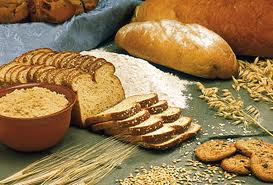

CEREALES |
|
|  | Los cereales constituyen la fuente de nutrientes más importante de la humanidad. Históricamente están asociados al origen de la civilización y cultura de todos los pueblos. El hombre pudo pasar de nómada a sedentario cuando aprendió a cultivar los cereales y obtener de ellos una parte importante de su sustento. Cada cultura, cada civilización, cada zona geográfica del planeta, consume un tipo de cereales específicos creando toda una cultura gastronómica en torno a ellos. Entre los europeos domina el consumo del trigo; entre los americanos, el de maíz, y el arroz es la comida esencial de los pueblos asiáticos; el sorgo y el mijo son propios de las comunidades africanas. |
|
Los cereales constituyen un producto básico en la alimentación de los diferentes pueblos, por sus características nutritivas, su costo moderado y su capacidad para provocar saciedad inmediata. Su preparación agroindustrial y tratamiento culinario son sencillos y de gran versatilidad, desde el pan o una pizza, hasta miles de dulces diferentes. Su consumo es adecuado, para cualquier edad y condición. En nuestro ambiente la forma de consumo de los cereales es muy variada; pan, bollería, pasteles, pastas, copos o cereales expandidos; pero también sirven como materia prima para industrias de bebidas alcohólicas como la cerveza o el whisky. |
|
¿QUE SON LOS CEREALES ?Los cereales constituyen un grupo de plantas dentro de otro más amplio: las gramíneas. Se caracterizan porque la semilla y el fruto son prácticamente una misma cosa: los granos de los cereales. Los más utilizados en la alimentación humana son el trigo, el arroz y el maíz, aunque también son importantes la cebada, el centeno, la avena y el mijo. El grano del cereal, que constituye el elemento comestible, es una semilla formada por varias partes: la cubierta o envoltura externa, compuesta básicamente por fibras de celulosa que contiene vitamina B 1 , se retira durante la molienda del grano y da origen al salvado. En el interior del grano distinguimos fundamentalmente dos estructuras: el germen y el núcleo. En el germen o embrión abundan las proteínas de alto valor biológico, contiene grasas insaturadas ricas en ácidos grasos esenciales y vitamina E y B 1 que se pierden en los procesos de refinado para obtener harina blanca. La parte interna o núcleo amiláceo, está compuesto por almidón y en el caso del trigo, avena y centeno por un complejo proteico denominado gluten que está formado por dos proteínas: gliadina y gluteina, que le dan elasticidad y características panificables a la masa de pan y son responsables de la esponjosidad y textura del buen pan. |
|